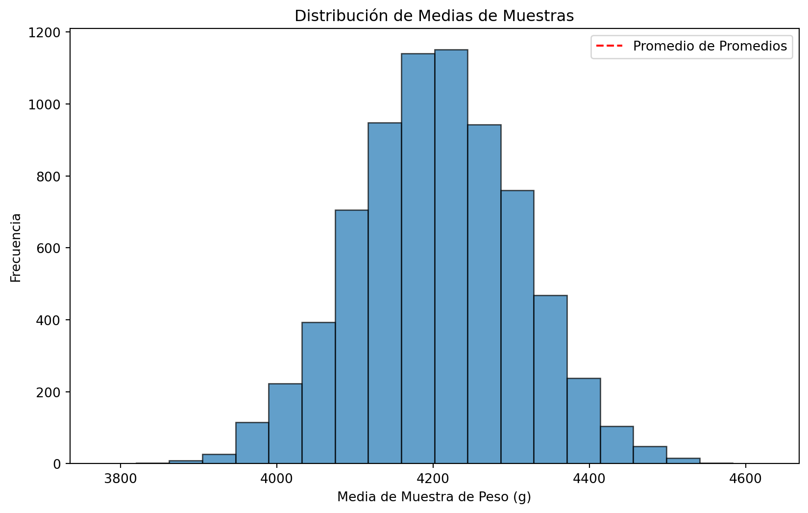

Notas detalladas de la sesión 1, curso análisis de datos, magíster en Data Science Universidad del Desarrollo.
Fecha: 19 agosto 2023. Versión 1
Objetivos de aprendizaje de la sesión
Comprender el papel del proceso de adquisición y almacenamiento en un proyecto de análisis de datos, junto a buenas prácticas que promuevan la transparencia y replicabilidad.
Aprender a formular preguntas y plantear hipótesis que puedan ser abordadas mediante el análisis de datos.
Desarrollar la habilidad de realizar pruebas de hipótesis y comprender la interpretación de sus resultados.
Contenidos:
El proceso de análisis de datos
El proceso de análisis de datos
Una visión general a las metodologías de análisis que veremos en el curso
Adquision y almacenmiento de los datos
Preparación de los datos
Preguntando a los datos
Asbtrayendo la realidad, variables aleatorias y probabilidades.
Planteamiento de preguntas.
Preguntas y respuestas: el rol de las hipótesis.
Respondiendo desde los datos: Pruebas de hipótesis
Conceptos Básicos de Pruebas de Hipótesis:
Definición de hipótesis nula y alternativa.
Niveles de significancia y p-values.
Errores tipo I y tipo II.
Tipos de Pruebas de Hipótesis:
Pruebas t para comparación de medias.
Pruebas chi-cuadrado para variables categóricas.
Pruebas ANOVA para comparación de múltiples grupos.
Interpretación de Resultados:
Evaluación de p-values y toma de decisiones.
Significación estadística vs. significación práctica.
Comunicación de los resultados de las pruebas de hipótesis.
Buenas prácticas en análisis de datos
Desafíos y Consideraciones:
Privacidad y seguridad de los datos.
Limpieza y transformación durante la preparación de datos.
Reproducibilidad y Control de Versiones (GIT):
Importancia de mantener un registro de los cambios en los datos.
Uso de sistemas de control de versiones como GIT para rastrear cambios.
Aplicación de control de versiones en proyectos de preparación de datos.
El proceso de análisis de datos
En el mundo actual, la generación y recopilación de datos se ha vuelto más accesible y significativa que nunca antes. Esta abundancia de información ofrece la oportunidad de extraer conocimientos valiosos que pueden influir en la toma de decisiones y el desarrollo de soluciones eficientes.
Sin embargo, el proceso de transformar estos datos crudos en información útil y significativa requiere una serie de pasos fundamentales que forman parte integral de la disciplina conocida como Ciencia de Datos.
En esta primera parte, daremos un vistazo general a las metodologías y enfoques clave que exploraremos a lo largo del curso, con énfasis en la importancia de la preparación de los datos.
El proceso de análisis de datos se puede dividir en varias etapas interconectadas, cada una con su propio conjunto de desafíos y consideraciones.
Bajo esta mirada, tenemos varias fases clave que están interconectadas. En este curso nos enfocaremos en la preparación de los datos y en su análisis mediante modelos de regresión. Esto con el objetivo de responder preguntas desde los datos, que provean información valiosa.
Adquisición de datos:
El primer paso en el proceso de análisis de datos implica la adquisición y el almacenamiento de los datos. Esto se refiere a la recolección de los datos necesarios para abordar una pregunta o problema en particular.
Puede implicar la recopilación de datos de fuentes diversas, como bases de datos, archivos CSV, páginas web o incluso sensores en tiempo real.
Es crucial comprender cómo recopilar y almacenar estos datos de manera adecuada, garantizando su calidad, integridad y seguridad.
Existen tantas fuentes de datos, como podríamos imaginar. ALgunas de las más comunes son las siguientes:
Encuestas y Cuestionarios:
Diseño y administración de encuestas para recopilar datos directamente de los participantes.
Permite obtener información específica y detallada según las preguntas planteadas.
Experimentos Controlados:
Diseño de experimentos para recopilar datos bajo condiciones controladas.
Útil para establecer relaciones causales y evaluar efectos de cambios controlados.
Observación y Sensores:
Uso de sensores y dispositivos para capturar datos en tiempo real.
Ampliamente utilizado en aplicaciones IoT (Internet of Things) para monitorizar y recopilar información ambiental.
Utilización de sensores en dispositivos móviles y wearables para recopilar datos de ubicación, salud y actividad.
Recopilación de Datos Existentes:
Utilización de datos ya recopilados y disponibles en bases de datos o fuentes públicas.
Reduce el tiempo y costo de recopilación, pero puede tener limitaciones en términos de calidad y relevancia.
Web Scraping (Web Scrapping):
Extracción de datos de sitios web utilizando herramientas y técnicas automatizadas.
Permite recopilar información no estructurada de manera eficiente, pero requiere atención a la ética y términos de uso.
Acceso a APIs (Application Programming Interfaces):
Interacción programática con sistemas y servicios para obtener datos en tiempo real.
Común en la obtención de datos de redes sociales, información climática, finanzas, entre otros.
Colaboración y Participación Comunitaria:
Colaboración con comunidades y grupos para recopilar datos de manera colectiva.
Puede ser útil para proyectos de mapeo colaborativo, ciencia ciudadana y recopilación de información local.
Data Lakes y Almacenamiento en la Nube:
Almacenamiento de grandes volúmenes de datos sin estructura definida en sistemas de almacenamiento en la nube.
Facilita la recopilación y posterior análisis de datos heterogéneos.
Usualmente se accede a través de querys SQL
Datos disponibles para el proyecto
En nuestro proyecto vamos a usar datos de tres posibles fuentes:
Datos públicos sobre educación chilena
Datos públicos sobre adjudicaciones municipales
Datos publicos sobre individuos en comunas chilenas (encuesta Casen)
Datos sobre crecimiento de paises y complejidad económica
Veamos como acceder algunos de estos datos.
Ejemplo: Datos públicos sobre individuos en comunas chilenas (encuesta Casen)
La Encuesta de Caracterización Socioeconómica Nacional (CASEN) es una investigación realizada en Chile que tiene como objetivo principal recopilar información detallada sobre la situación socioeconómica de los hogares y las personas en el país. Esta encuesta se lleva a cabo de manera periódica y abarca una amplia variedad de temas, como ingresos, educación, empleo, salud, vivienda y otros aspectos relevantes para comprender la realidad socioeconómica de la población chilena. La información recopilada en la Encuesta CASEN se utiliza para informar políticas públicas, tomar decisiones informadas y analizar la evolución de indicadores sociales a lo largo del tiempo.
Si tenemos los datos alojados en una dependencia, simplemente los cargamos. El formato mas comun es .csv, pero a veces estan en formatos extraños. Por ejemplo, .dta de STATA.
import pandas as pddf_casen2020= pd.read_stata("https://github.com/melanieoyarzun/taller_seriestiempo_IDS/blob/b0be4e78a8c7a738e41b284a65d350179abbda96/Data/casen_2020_ingresos.dta?raw=true")df_casen2020.head(5)
folio
o
id_persona
region
comuna
zona
expr
edad
sexo
tot_per
...
esc2
educ
o1
yaut
yauth
yautcor
yautcorh
ytrabajocor
ytrabajocorh
yae
0
1.101100e+11
1
5
Región de Tarapacá
Iquique
Urbano
67
34
Mujer
2
...
12.0
Media humanista completa
No
220000.0
300000
220000.0
300000
150000.0
150000.0
240586.0
1
1.101100e+11
2
6
Región de Tarapacá
Iquique
Urbano
67
4
Mujer
2
...
NaN
Sin educación formal
NaN
80000.0
300000
80000.0
300000
NaN
150000.0
240586.0
2
1.101100e+11
2
31
Región de Tarapacá
Iquique
Urbano
67
5
Mujer
3
...
NaN
Básica incompleta
NaN
25000.0
941583
25000.0
941583
NaN
891583.0
439170.0
3
1.101100e+11
1
32
Región de Tarapacá
Iquique
Urbano
67
45
Hombre
3
...
15.0
Técnico nivel superior incompleta
Sí
889500.0
941583
889500.0
941583
889500.0
891583.0
439170.0
4
1.101100e+11
3
30
Región de Tarapacá
Iquique
Urbano
67
19
Mujer
3
...
NaN
No sabe
No
27083.0
941583
27083.0
941583
2083.0
891583.0
439170.0
5 rows × 22 columns
Una vez cargados los datos, debemos proceder a su limpieza y exploración, para ser preparados para analizarlos. De esto se tratará la siguiente sesión del curso.
Ejemplo: Datos desde la API del banco mundial Primero siga este ejemplo practico de importar datos, luego será facil responder la pregunta anterior.
#pandas remote data access support for calls to the World Bank Indicators APIfrom pandas_datareader import data, wb # para instalar: conda install pandas-datareader o pip install pandas-datareader#Revisemos que indicadores hay disponibles. En este caso revisare de PIB (GDP en ingés), pero se pueden explorar muchas más opciones.wb.search('gdp')
id
name
unit
source
sourceNote
sourceOrganization
topics
688
6.0.GDP_current
GDP (current $)
LAC Equity Lab
GDP is the sum of gross value added by all res...
b'World Development Indicators (World Bank)'
Economy & Growth
689
6.0.GDP_growth
GDP growth (annual %)
LAC Equity Lab
Annual percentage growth rate of GDP at market...
b'World Development Indicators (World Bank)'
Economy & Growth
690
6.0.GDP_usd
GDP (constant 2005 $)
LAC Equity Lab
GDP is the sum of gross value added by all res...
b'World Development Indicators (World Bank)'
Economy & Growth
691
6.0.GDPpc_constant
GDP per capita, PPP (constant 2011 internation...
LAC Equity Lab
GDP per capita based on purchasing power parit...
b'World Development Indicators (World Bank)'
Economy & Growth
1503
BG.GSR.NFSV.GD.ZS
Trade in services (% of GDP)
World Development Indicators
Trade in services is the sum of service export...
b'International Monetary Fund, Balance of Paym...
Economy & Growth ; Private Sector ; Trade
...
...
...
...
...
...
...
...
16704
UIS.XUNIT.GDPCAP.23.FSGOV
Initial government funding per secondary stude...
Education Statistics
Total general (local, regional and central, cu...
b'UNESCO Institute for Statistics'
16705
UIS.XUNIT.GDPCAP.23.FSHH
Initial household funding per secondary studen...
Education Statistics
Total payments of households (pupils, students...
b'UNESCO Institute for Statistics'
16706
UIS.XUNIT.GDPCAP.3.FSGOV
Initial government funding per upper secondary...
Education Statistics
Total general (local, regional and central, cu...
b'UNESCO Institute for Statistics'
16707
UIS.XUNIT.GDPCAP.5T8.FSGOV
Initial government funding per tertiary studen...
Education Statistics
Total general (local, regional and central, cu...
b'UNESCO Institute for Statistics'
16708
UIS.XUNIT.GDPCAP.5T8.FSHH
Initial household funding per tertiary student...
Education Statistics
Total payments of households (pupils, students...
b'UNESCO Institute for Statistics'
540 rows × 7 columns
# Obtengamos la lista de paises disponiblescountries=wb.get_countries()#Preview primeras filas lista de paisescountries[:5]
iso3c
iso2c
name
region
adminregion
incomeLevel
lendingType
capitalCity
longitude
latitude
0
ABW
AW
Aruba
Latin America & Caribbean
High income
Not classified
Oranjestad
-70.0167
12.5167
1
AFE
ZH
Africa Eastern and Southern
Aggregates
Aggregates
Aggregates
NaN
NaN
2
AFG
AF
Afghanistan
South Asia
South Asia
Low income
IDA
Kabul
69.1761
34.5228
3
AFR
A9
Africa
Aggregates
Aggregates
Aggregates
NaN
NaN
4
AFW
ZI
Africa Western and Central
Aggregates
Aggregates
Aggregates
NaN
NaN
Observar que este es un data frame con dos índices: pais y año. Para mayor referencia coo tratar este tipo de datos ver en https://pandas.pydata.org/pandas-docs/stable/user_guide/advanced.html
Obtengamos un data frame con los datos de Chile, entre 1980 y 2020.
#sabemos que queremos Chile, asi que busquemos su infocountries[ countries['name'] =='Chile' ]# Descarguemos la data desde la API del banco mundial a un dataframedf_GPDpc_Chile = wb.download(#Use the indicator attribute to identify which indicator or indicators to download indicator='NY.GDP.PCAP.KD',#Use the country attribute to identify the countries you want data for country=['CL'],#Identify the first year for which you want the data, as an integer or a string start='1980',#Identify the last year for which you want the data, as an integer or a string end=2020 )df_GPDpc_Chile.info()
Si quisieramos, por simplicidad quedarnos solo con el indice del año y reordenar el dataframe:
df_GPDpc_Chile.droplevel('country')reversed_df = df_GPDpc_Chile.iloc[::-1] #invertimos el dataframe reversed_df= reversed_df.droplevel('country') # removemos el level pais, ya que todo el análisis es para un solo paísreversed_df.head(5)
NY.GDP.PCAP.KD
year
1980
4694.337113
1981
4928.563103
1982
4322.647868
1983
4047.790234
1984
4154.496068
Ahora, realicemos un grafico rápido con nuestros datos:
Taller 1: Pregunta 1 - Bajando y formateando datos del Banco Mundial**
Replique el ejemplo práctico de importar datos desde la API del Banco Mundial y empezar la base para su análisis de series de tiempo.
Importe usted la serie de GDP total Y Percapita para otro país serie desde la API del Banco mundial, muestre sus principales características y realice un grafico.
¿pareciera haber tendencias?
Preguntando a los datos
¿Cómo plantear preguntas y formular hipótesis en el contexto del análisis de datos? El proceso de análisis comienza con la curiosidad y/o necesidad.cLa formulación de preguntas relevantes que se puedan responder mediante la exploración y el examen de los datos disponibles.
Inicia con la identificación de áreas de interés y la formulación de preguntas específicas relacionadas con esos temas. Estas preguntas pueden surgir de la necesidad de resolver un problema, entender un fenómeno o explorar patrones en los datos. Un buen planteamiento de preguntas es crucial, ya que guiará todo el proceso de análisis.
El proceso de abstraer la realidad
Preguntas e hipótesis:
Una hipótesis es una afirmación, verificable con evidencia. En este sentido, para toda pregunta podemos responderla mediante hipótesis.
En particular, para responder a las preguntas en el contexto de datos, es común formular hipótesis nulas y alternativas.
La hipótesis nula es aquella que propone que algun parámetro toma cierto valor. Este generlamente es un punto de verdad. Si bien, con datos no podemos corroborar que algo es cierto, si podemos dar evidencia de que no es cierto. En general, planteamos el problema de tal manera que podamos rechazar la hipótesis nula, en favor de otra que llamamos alternatiba.
Quizas, la hipotesis nula más famosa es la prueba de “significancia”. En esta se propone que un parámetro (muchas veces un efecto, o correlación) es 0, es decir, plantea que no hay efecto o relación entre las variables, mientras que la hipótesis alternativa sugiere que sí existe una relación o efecto significativo.
Estas hipótesis son fundamentales para establecer una base objetiva para el análisis y para evaluar las evidencias encontradas en los datos. El proceso de plantear preguntas y formular hipótesis es el primer paso en el análisis de datos, ya que establece una guía clara para el enfoque y la dirección del trabajo. Al identificar preguntas y establecer hipótesis, se crea un marco sólido que orientará la exploración y el análisis de los datos disponibles.
Taller 1: Pregunta 2 - Investigando sobre países:
Considere que tenemos los datos del banco mundial, del país que selecciono anteriormente, y desea aprender sobre alguna caracterpistica de dicho pais en el periodo.
Escriba una pregunta de investigación que se pueda responder con los datos disponibles. ¿Cómo definiria la variable aleatoria relevante? ¿Qué hipótesis podria responder su pregunta?
Respondiendo desde los datos
Inferencia estadística
Inferencia se refiere al proceso de hacer generalizaciones de una población a partir de una muestra de esa población. En particular, la idea es que si tenemos un conjunto de datos (muestra) obtenido de una población más grande, el cual es representativo de esta, podemos utilizar métodos estadísticos para sacar conclusiones sobre las características y propiedades de esa población en su totalidad.
Población y Muestra
El proceso de inferencia estadística se basa en el principio de que una muestra bien seleccionada puede proporcionar información valiosa sobre la población en general. Mediante el análisis de la muestra, podemos estimar parámetros poblacionales, como la media, la proporción o la desviación estándar, y también podemos construir intervalos de confianza para estimar el rango dentro del cual se espera que se encuentren estos parámetros.
El uso de la inferencia estadística es fundamental, especialmente si es impracticable o costoso analizar cada elemento de una población en particular. Por ejemplo, en lugar de encuestar a todos los ciudadanos de un país, es mucho más factible encuestar una muestra representativa y utilizar esa información para hacer suposiciones sobre la opinión de la población en general.
Estadígrafos y el Teorema del Límite central
Entonces, en cada muestra que tenemos podemos calcular aproximaciones a los parámetros poblacionales de interés. Estos son los llamados estadísgrafos
Dado que por cada muestra que tenemos, vamos a calcular un estadígrafo este es en si mismo una variable aleatoria. Tiene su propia distribución, media y varianza!
El estadígrafo más conocido es el promedio o media muestral.
Estadigrafos más comunes
Cada estimador es una función de la muestra, por ende para cada muestra que tengamos obtendremos un valor numérico específico para el estimador. Por este motivo, cuando estamos trabajando con una única muestra específica, tenemos un único valor del estimador, o estimador puntual.
Nunca (o casi nunca) podemos conocer el valor verdadero de los parámetros en la población, por lo cual un primer camino tentador es usar el estimador puntual para tomar una decisión. Como nunca podemos conocer el verdadero parámetro, tampoco podemos saber a ciencia cierta si el estimador puntual es cercano a este.
¿Cómo conectamos estadpigrafos y parámetros?
El teorema del límite central, nos dice que, bajo ciertas condiciones, la distribución de las medias muestrales de una población se aproxima a una distribución normal a medida que el tamaño de la muestra aumenta, independientemente de la forma de la distribución original de la población. Este teorema es esencial en inferencia estadística y tiene amplias aplicaciones en análisis de datos y toma de decisiones.
La media muestral se distribuye normal, sin importar la distribución de la variable subyacente
Formalmente, el Teorema del Límite Central establece lo siguiente:
Supongamos que tenemos una población con media μ y desviación estándar σ finitas. Si tomamos muestras aleatorias de tamaño n de esta población y calculamos la media muestral de cada muestra, entonces, a medida que n tiende a infinito, la distribución de estas medias muestrales se aproximará a una distribución normal con media μ y desviación estándar σ/√n.
En otras palabras, sin importar la distribución original de la población, cuando el tamaño de la muestra es suficientemente grande, la distribución de las medias muestrales seguirá una forma de campana similar a la distribución normal. Este resultado es fundamental para realizar inferencias sobre la población a partir de muestras, ya que nos permite aplicar métodos basados en la distribución normal incluso cuando la población original no sigue una distribución normal.
Error estándar
Corresponde a un estimador de la desviación estándar del estimador.
Identifica que tan lejos estamos del verdadero valor poblacional.
Para la media muestral:
\[ SE = \frac{S_y}{\sqrt{n}}\]
Se utiliza para evaluar a los estimadores, mediante pruebas de hipotesis y construir intervalos de confianza
Si se conoce un estimador y su desviación estándar, podemos saber qué tan precisa es la estimación (mucha o poca varianza), pero no podemos saber si el estimador está cercano o no a su valor verdadero en la población (el cual no conocemos).
Nunca (o casi nunca) podemos conocer el valor verdadero de los parámetros en la población.
Sí se puede construir un conjunto de valores que contienen el parámetro poblacional con alguna probabilidad (llamada el nivel de confianza).
Un intervalo de confianza contiene los posibles valores del estimador, entre un límite inferior y un límite superior, con cierta probabilidad.
Inferencia sobre Estadígrafos y parámetros - Conectados por el Teorema del Límite central
Con este teorema, podemos construir inferencia de a partir de {x} indirectamente.
Intervalos de confianza
Pruebas de hipótesis
p-valor
Intervalos de confianza
Una primera manera de aproximarnos a los parámetros poblacionales (particularmente a la esperanza) es mediante la construcción de intervalos de confianza.
Un intervalo de confianza contiene los posibles valores del estimador, entre un límite inferior y un límite superior, con cierta probabilidad.
¿De dónde saco los valores críticos?
Los valores críticos de una distribución los obtenemos de una tabla de distribución o para calcular podemos usar excel, R o en python:
scipy.stats.t.isf(alpha, n-p)
Si estamos trabajando con dos colas, usar alpha/2 porque la probabilidad de error la estamos repartiendo a ambas colas.
[Matemáticamente] Caso 1: Varianza conocida
Sumpongamos que tenemos una muestra aleatoria: \(y_1, y_2, \dots, y_n\) de una población \(Y\sim N(\mu, \sigma^2)\)
La media muestral \(\bar{y}= \frac{1}{n}\sum_{i=1}{n}y_i\)
Su esperanza es: \(E(\bar{y}) =\mu\)
Su varianza es: \(var(\bar{y}) = \frac{\sigma^2}{n}\)
se distribuye normal, tal que podemos estandarrizar: $ N(0,1) $
Entonces, podemos describir que:
$ P( -1.96 < < 1.96 ) = 0.95 $$
$ P( {y}- < < {y} + ) = 0.95 $
este intervalo es aleatorio, porque \(\bar{y}\) es diferente en cada muestra.
para el 95% de las muestras elatorias, el intervalo construido de esta manera contendrá a \(\mu\)
[Matemáticamente] Caso 2: Varianza desconocida
Supongamos que tenemos una muestra aleatoria \(y_1, y_2, \dots, y_n\) de una población \(y\sim N(\mu, \sigma^2 )\)
Usamos la estimación de la desviación estándar muestral: \[ S_y = \sqrt{\frac{1}{n-1} \sum{i=1}{n}(y_i - \bar{y})^2} \]
Y si estandarizamos \(\bar{y}\): \[ \frac{\bar{Y} - \mu_y }{ \frac{S}{\sqrt{n}}} \sim t_{n-1} \]
Podeos constrir un intervalo de la porbabilidad de estar al 95 con el valor critico c adecuado a los grados de libertad n-1:
Si llamamos al error estandar SE: \(SE(\bar{y})=\frac{S}{\sqrt{n}}\)
El IC es: \[ (\bar{y} - \frac{c\times S}{\sqrt{n}}, \bar{y} + \frac{c\times S}{\sqrt{n}} ) \]
El intervalo es una muestra aleatoria
Esto quiere decir que para cada muestra podemos construir un intervalo.
Así como el estimador es una variable aleatoria, esto también es cierto para los intervalos de confianza. Por eso también se les llama intervalos aleatorios, ya que con diferentes muestras obtendremos un diferente estimador e intervalo.
Por ende, supongamos que contamos con 20 muestras, entonces construiremos 20 intervalos de confanza diferentes para los 20 estimadores puntuales.
Interpretación de intervalo de confianza
Pensemos en un 95% de confianza (un valor usual). Esto quiere decir, que si se repitiera este ejercicio muchas veces y construyéramos un intervalo de esta forma el 95% de ellos contendría el verdadero parámetro poblacional.
Un elemento importante a considerar es que esto no significa que con 95% de certeza el parámetro está exactamente en estos valores. Por ejemplo, al 95% de confianza con 20 intervalos 19 contendrán el parámetro.
Pruebas de hipótesis
Una forma de verificar hipotesis sobre los parámetros es mediante el contraste de hipótesis.
Empezamos suponiendo que hay una distribución conocida para el estadígrafo, centrada en un valor específico. Y nos preguntamos, si esto fuea verdad ¿qué tan probable es la muestra que tengo?
Llamamos la hipótesis a probar Ho, y su alternativa H1.
Errores y P-valor
Asociada esta prueba, entonces, hay asociados dos tipos de errores:
Tipo I: Rechazar Ho cuando es cierta
Tipo II: No rechazar Ho cuando es falsa.
Se elige nivel de significancia de contraste (α) = probabilidad de cometer error Tipo I. Típicamente α = 0,01, 0,05, 0,10.
Para contrastar una hipótesis con su alternativa, debemos elegir:
Un estadístico de contraste
Una regla de rechazo, la cual depende de un valor crítico.
Prueba de significancia
Definimos la prueba de hipótesis de significancia como aquella que indica si un estimador \(\hat{T}\) es 0.
\[ H_0: T =0\text{ vs }H_1: T \neq 0 \]
El Valor de probabilidad (ó p-valor) es el nivel probabilidad más alto para el cual no podemos rechazar la hipótesis nula de la prueba de significancia.
Ejemplo: $H_0: $ y en la muestra especifica t= 1.52:
el mayor nivel de significancia estadistica al cual no rechazamos \(H_0\) es 6.5%
la probabilidad de observar un velor \(T\geq 1.52\) cuando \(H_0\) es cierta es en un 6.5 de las muestras.
P-valores bajos dan evidencia en contra de \(H_0\), ya que la probabilidad de observarlo si \(H_0\) es cierta es bajo.
Ejemplo de aplicación: Peso de los Pingüinos Palmer
Consideremos los datos de los pingüinos Palmer. Los datos “Palmer Penguins” son un conjunto que detalla medidas morfológicas y características de tres especies de pingüinos: Adelie, Gentoo y Chinstrap. Recopilados por el Dr. Bill Link y su equipo. (Horst AM, Hill AP, Gorman KB (2020). palmerpenguins: Palmer Archipelago (Antarctica) penguin data. doi:10.5281/zenodo.3960218, R package version 0.1.0, https://allisonhorst.github.io/palmerpenguins/index.html)
import seaborn as snsimport pandas as pd# Cargar el conjunto de datos "Penguins"penguins = sns.load_dataset("penguins")penguins.head()
species
island
bill_length_mm
bill_depth_mm
flipper_length_mm
body_mass_g
sex
0
Adelie
Torgersen
39.1
18.7
181.0
3750.0
Male
1
Adelie
Torgersen
39.5
17.4
186.0
3800.0
Female
2
Adelie
Torgersen
40.3
18.0
195.0
3250.0
Female
3
Adelie
Torgersen
NaN
NaN
NaN
NaN
NaN
4
Adelie
Torgersen
36.7
19.3
193.0
3450.0
Female
En el contexto de los pingüinos y el peso de su población, podríamos tomar una muestra de pingüinos y calcular un intervalo de confianza para el peso promedio. Esto nos daría una estimación del peso promedio de la población total, junto con la confianza en que este valor estimado es preciso.
Es importante tener en cuenta que el proceso de inferencia estadística se basa en suposiciones y en el uso adecuado de técnicas estadísticas.
La elección de la muestra, la interpretación de los resultados y el nivel de confianza seleccionado son aspectos cruciales para realizar inferencias precisas y significativas.
Relicemos algunos ejemplos de pruebas de hipótesis, sobre el peso de los pingüinos.
Primero calcularemos el promedio muestral y lo veremos en el contexto de los datos observados:
import matplotlib.pyplot as plt# Calcular el promedio del peso de los pingüinospromedio_peso = penguins['body_mass_g'].mean()# Crear un histograma de la distribución del peso con el promedioplt.figure(figsize=(10, 6))sns.histplot(data=penguins, x='body_mass_g', bins=20, kde=True)plt.axvline(x=promedio_peso, color='red', linestyle='dashed', label='Promedio')plt.title('Distribución de Peso de Pingüinos')plt.xlabel('Masa Corporal (g)')plt.ylabel('Frecuencia')plt.legend()plt.show()
Nuestra idea de la inferencia, es aprovechar las propiedades del promedio muestral. De que es el promedio muestral el que se distribuye normal, su media es la media poblacional y conocemos sus características.
Por ejemplo, consideremos que de esta población de pingüinos obtenemos 1000 muestras de 50 individuos cada una. Si graficamos sus medias, podremos ver que estas se distribuyen aproximadamente normal.
Si reducimos el tamaño de muestra, más nos alejamos de la distribución normal.
Si reducimos el número de repeticiones tambieé.
import numpy as np# Definir el tamaño de cada muestra y la cantidad de muestrastamano_muestra =50cantidad_muestras =10000# Crear una lista para almacenar las medias de cada muestramedias_muestras = []# Realizar el muestreo y cálculo de medias para cada muestrafor _ inrange(cantidad_muestras): muestra = np.random.choice(penguins['body_mass_g'], size=tamano_muestra, replace=False) media_muestra = np.mean(muestra) medias_muestras.append(media_muestra)# Calcular el promedio de los promedios de las muestraspromedio_promedios = np.mean(medias_muestras)# Crear el gráfico de las medias de las muestrasplt.figure(figsize=(10, 6))plt.hist(medias_muestras, bins=20, edgecolor='black', alpha=0.7)plt.axvline(x=promedio_promedios, color='red', linestyle='dashed', label='Promedio de Promedios')plt.title('Distribución de Medias de Muestras')plt.xlabel('Media de Muestra de Peso (g)')plt.ylabel('Frecuencia')plt.legend()plt.show()

Intervalo de confianza
Obtengamos una muestra y calculemos un intervalo de confianza:
import seaborn as snsimport numpy as npimport scipy.stats as stats# Obtener una muestra simple de 40 pingüinossample_size =40sample = np.random.choice(penguins["body_mass_g"], size=sample_size)# Calcular el error estándar de la media muestralsample_std = np.std(sample, ddof=1) # Usar ddof=1 para calcular la desviación estándar muestralstandard_error = sample_std / np.sqrt(sample_size)# Nivel de confianza (por ejemplo, 95%)confidence_level =0.95# Calcular el margen de errormargin_of_error = stats.t.ppf((1+ confidence_level) /2, df=sample_size -1) * standard_error# Calcular el intervalo de confianzasample_mean = np.mean(sample)confidence_interval = (sample_mean - margin_of_error, sample_mean + margin_of_error)print("Intervalo de Confianza para el Peso:")print(confidence_interval)
Intervalo de Confianza para el Peso:
(4026.6713320043764, 4560.828667995624)
El resultado será un rango de valores dentro del cual es probable que se encuentre el verdadero peso promedio de los pingüinos en la población, con un nivel de confianza del 95%.
¿Como nos fue? ¿Contiene al verdadero valor?
Comparaciones de grupos
Ahora consideremos que tenemos grupos que queremos comparar.
Si hacemos una grafica de distribución de tamaño por especie y sexo, podriamos empezar a analizar diferencias entre los grupos.
# Crear la tabla de doble entrada por tipo y sexo de los pinguinostabla_doble_entrada = penguins.groupby(['species', 'sex'])['body_mass_g'].agg(['mean', 'var']).reset_index()# Renombrar las columnas para mayor claridadtabla_doble_entrada.rename(columns={'mean': 'Promedio', 'var': 'Varianza'}, inplace=True)# Mostrar la tabla de doble entradatabla_doble_entrada
species
sex
Promedio
Varianza
0
Adelie
Female
3368.835616
72565.639269
1
Adelie
Male
4043.493151
120278.253425
2
Chinstrap
Female
3527.205882
81415.441176
3
Chinstrap
Male
3938.970588
131143.605169
4
Gentoo
Female
4679.741379
79286.335451
5
Gentoo
Male
5484.836066
98068.306011
Podriamos querer saber si el peso es diferente para los pinguinos de la especie Adelie, para diferentes sexos:
Pregunta de Prueba de Hipótesis:
¿Existe una diferencia significativa en el peso promedio entre los pingüinos machos y las pingüinas hembras en la especie “Adelie”?
Hipótesis Nula (H0):
No hay diferencia significativa en el peso promedio entre los pingüinos machos y las pingüinas hembras en la especie “Adelie”.
Hipótesis Alternativa (H1):
Existe una diferencia significativa en el peso promedio entre los pingüinos machos y las pingüinas hembras en la especie “Adelie”.
Para probar esta hipótesis, podrías utilizar una prueba de hipótesis para comparar las medias de las muestras de peso de los pingüinos machos y hembras en la especie “Adelie”. Esto te permitiría determinar si la diferencia observada en el peso promedio es lo suficientemente grande como para considerarse estadísticamente significativa.
import matplotlib.pyplot as plt# Cargar el conjunto de datos "Penguins"penguins = sns.load_dataset("penguins")# Filtrar los pingüinos de la especie "Adelie"adelie_penguins = penguins[penguins['species'] =='Adelie']# Crear un histograma para la distribución de peso por sexoplt.figure(figsize=(10, 6))sns.histplot(data=adelie_penguins, x='body_mass_g', hue='sex', bins=20, kde=True)plt.title('Distribución de Peso por Sexo para Pingüinos Adelie')plt.xlabel('Masa Corporal (g)')plt.ylabel('Frecuencia')plt.legend(title='Sexo')plt.show()
No artists with labels found to put in legend. Note that artists whose label start with an underscore are ignored when legend() is called with no argument.
A simple vista podriamos pensar ambos grupos son diferentes. Es más claro si dibujamos el promedio muestral observado.
# Crear un gráfico de densidad con líneas de promedioplt.figure(figsize=(10, 6))sns.kdeplot(data=adelie_penguins, x='body_mass_g', hue='sex', fill=True, common_norm=False)plt.axvline(x=adelie_penguins.groupby('sex')['body_mass_g'].mean()['Female'], color='blue', linestyle='dashed', label='Promedio Femenino')plt.axvline(x=adelie_penguins.groupby('sex')['body_mass_g'].mean()['Male'], color='orange', linestyle='dashed', label='Promedio Masculino')plt.title('Densidad de Peso por Sexo para Pingüinos Adelie')plt.xlabel('Masa Corporal (g)')plt.ylabel('Densidad')plt.legend()plt.show()
Si construimos una prueba t de diferencia de medias:
# Cargar el conjunto de datos "Penguins"penguins = sns.load_dataset("penguins")# Filtrar los pingüinos de la especie "Adelie"adelie_penguins = penguins[penguins['species'] =='Adelie']# Filtrar machos y hembrasmachos = adelie_penguins[adelie_penguins['sex'] =='Male']hembras = adelie_penguins[adelie_penguins['sex'] =='Female']# Realizar la prueba t independientet_statistic, p_value = stats.ttest_ind(machos['body_mass_g'], hembras['body_mass_g'], equal_var=False)# Imprimir resultadosprint("Estadística t:", t_statistic)print("Valor p:", p_value)# Crear un gráfico de comparación de pesoplt.figure(figsize=(10, 6))sns.boxplot(data=[machos['body_mass_g'], hembras['body_mass_g']], palette=['blue', 'pink'])plt.title('Comparación de Peso entre Machos y Hembras de Pingüinos Adelie')plt.xticks([0, 1], ['Machos', 'Hembras'])plt.ylabel('Peso (g)')plt.show()
Estadística t: 13.126285923485874
Valor p: 6.402319748031793e-26
Finalmente, podriamos querer comparar hembras y machos de diferentes Islas. Para esto podriamos usar una prueba ANOVA.
En este código, primero cargamos el conjunto de datos “Penguins” y luego creamos dos subconjuntos separados para machos y hembras. Después, utilizamos la función stats.f_oneway() para realizar una prueba ANOVA para comparar los pesos entre hembras y machos. El resultado incluye la estadística F y el valor p.
El valor p nos indica si hay una diferencia significativa entre los grupos. Si el valor p es menor que un umbral de significancia (por ejemplo, 0.05), podríamos rechazar la hipótesis nula y concluir que hay una diferencia significativa en el peso entre hembras y machos de diferentes islas.
Recuerda que, antes de realizar una prueba ANOVA, es importante verificar las suposiciones necesarias, como la normalidad y la homogeneidad de varianzas en los grupos. Si estas suposiciones no se cumplen, podría ser necesario considerar otras pruebas estadísticas o transformaciones de los datos.
import seaborn as snsimport scipy.stats as stats# Cargar el conjunto de datos "Penguins"penguins = sns.load_dataset("penguins")# Filtrar machos y hembrasmachos = penguins[penguins['sex'] =='Male']hembras = penguins[penguins['sex'] =='Female']# Realizar una prueba ANOVAresult = stats.f_oneway(machos['body_mass_g'], hembras['body_mass_g'])# Imprimir resultadosprint("Estadística F:", result.statistic)print("Valor p:", result.pvalue)
Estadística F: 72.96098633250911
Valor p: 4.897246751596325e-16
import seaborn as snsimport matplotlib.pyplot as pltimport pandas as pdimport scipy.stats as stats# Cargar el conjunto de datos "Penguins"penguins = sns.load_dataset("penguins")# Filtrar machos y hembrasmachos = penguins[penguins['sex'] =='Male']hembras = penguins[penguins['sex'] =='Female']# Realizar una prueba ANOVAresult = stats.f_oneway(machos['body_mass_g'], hembras['body_mass_g'])# Calcular las medias de peso por género e islamedias_peso = penguins.groupby(['species', 'island', 'sex'])['body_mass_g'].mean().reset_index()# Crear un gráfico de barras con puntos y intervalos de confianzaplt.figure(figsize=(10, 6))sns.barplot(data=medias_peso, x='species', y='body_mass_g', hue='sex', errorbar='sd', palette=['pink', 'blue'])#sns.boxplot(data=medias_peso, x='species', y='body_mass_g', hue='sex', palette=['blue', 'pink'])plt.title('Comparación de Peso entre Hembras y Machos por Isla')plt.xlabel('Especie e Isla')plt.ylabel('Media de Peso (g)')plt.legend(title='Sexo')plt.show()
Experimentos Aleatorios y pruebas A/B
Un experimento estadístico es un enfoque científico que busca establecer relaciones de causalidad y obtener conclusiones sobre cómo ciertas variables afectan a otras. Los experimentos estadísticos se diseñan para manipular deliberadamente una o más variables independientes y observar los efectos que tienen sobre una variable dependiente. Al controlar y manipular las variables de interés, los experimentos permiten a los investigadores hacer afirmaciones más sólidas sobre las relaciones causales.
Una prueba A/B, también conocida como prueba de división, es una técnica utilizada en la investigación y el análisis para comparar dos variantes o grupos con el fin de determinar cuál de ellos produce un mejor resultado en términos de rendimiento, efectividad o preferencia. En una prueba A/B, se selecciona un grupo de muestra y se divide en dos grupos, uno que experimenta la variante “A” (por ejemplo, una versión actual) y otro que experimenta la variante “B” (por ejemplo, una versión modificada). Luego, se recopilan datos y se comparan los resultados de ambos grupos para determinar cuál variante es más efectiva. Las pruebas A/B son comunes en marketing, diseño de productos y desarrollo web para tomar decisiones informadas sobre mejoras y optimizaciones.
Las pruebas A/B es son ampliamente utilizado en diversas áreas, como el marketing, la investigación de usuarios y el diseño de productos. En una prueba A/B, se seleccionan dos grupos de muestra: uno experimenta la versión original (A) y el otro experimenta una variante modificada (B). La idea detrás de una prueba A/B es evaluar si la variante B produce un efecto significativamente diferente en una métrica de interés en comparación con la variante A.
Mediante la asignación aleatoria de los participantes a los grupos A y B, y al controlar las condiciones en las que se les presenta cada variante, se reduce la posibilidad de sesgos y se permite un análisis causal más confiable. Al comparar las diferencias observadas en los resultados entre los grupos A y B, es posible inferir si la variante B tiene un impacto significativo en la variable de interés.
Sin embargo, es importante tener en cuenta que aunque las pruebas A/B proporcionan evidencia de asociación causal, no garantizan que la causalidad sea absoluta. Otros factores no controlados pueden influir en los resultados. Para obtener una comprensión más completa de la causalidad, los experimentos controlados aleatorizados y el uso de métodos de diseño experimental sólidos son esenciales. Las pruebas A/B son una herramienta poderosa para explorar causas y efectos en condiciones controladas y analizar el rendimiento relativo de diferentes opciones.
Veamos un ejemplo en la práctica. Este es parte del ejercicio de aplicación.
Caso: Aplicación de A/B testing para promoción de Marketing
Enunciado
Imaginemos que trabajamos en una empresa de e-commerce que vende productos electrónicos y queremos aumentar las ventas en una línea de productos específica, como teléfonos móviles.
Para ello, decidimos utilizar una promoción de ventas basada en una ruleta lúdica que ofrecerá descuentos a los clientes que la utilicen.
Para implementar la promoción, primero seleccionamos aleatoriamente un grupo de clientes y les enviamos un correo electrónico con un enlace a la ruleta lúdica. Al hacer clic en el enlace, los clientes son redirigidos a una página en la que pueden girar la ruleta y ganar un descuento en su próxima compra.
Vamos a pensar que los clientes son asignados a uno de los siguientes grupos: - Control: no les da una promoción (mala suerte, intentalo otra vez) - Tratamiento 1: 20% de descuento en el producto - Tratamiento 2: Un complemento gratuito (carcasa) que tiene un costo para la empresa similar al descuento.
Creación de los datos
Como nuestro caso es un ejemplo ficticio, vamos a crear los datos.
Este código creará un conjunto de datos con 400 observaciones (200 en el grupo de control y 200 en el grupo de tratamiento), donde se simulan lascompras de cada usuario.
import numpy as npimport pandas as pdimport random# Define una semilla para la generación de números aleatoriosnp.random.seed(123)random.seed(123)# Crear un vector de 200 valores aleatorios para el grupo de controlcontrol = np.random.choice(["Control"], size=200, replace=True)# Crear un vector de 200 valores aleatorios para el grupo de tratamientotratamiento = np.random.choice(["Treatment 1", "Treatment 2"], size=100, replace=True, p=[0.7, 0.3])# Crear un vector de número de compras para cada grupocontrol_compras = np.random.binomial(5, 0.2, size=200)tratamiento1_compras = np.random.binomial(5, 0.4, size=100)tratamiento2_compras = np.random.binomial(5, 0.6, size=100)# Combinar los vectores en un DataFramedata = {'grupo': np.concatenate((control, np.repeat("Treatment", 200))),'tipo_tratamiento': np.concatenate((np.repeat("Control", 200), np.repeat(["Treatment 1", "Treatment 2"], [100, 100]))),'ventas': np.concatenate((control_compras, tratamiento1_compras, tratamiento2_compras))}ventas_df = pd.DataFrame(data)# Verificar el DataFrameventas_df
grupo
tipo_tratamiento
ventas
0
Control
Control
1
1
Control
Control
1
2
Control
Control
0
3
Control
Control
0
4
Control
Control
0
...
...
...
...
395
Treatment
Treatment 2
1
396
Treatment
Treatment 2
2
397
Treatment
Treatment 2
1
398
Treatment
Treatment 2
3
399
Treatment
Treatment 2
2
400 rows × 3 columns
Taller 1: Pregunta 3 -Ejemplo AB test en Marketing:
Considere que tenemos los datos del banco mundial, del país que selecciono anteriormente, y desea aprender sobre alguna caracterpistica de dicho pais en el periodo.
Escriba una pregunta de investigación que se pueda responder con los datos disponibles. ¿Cómo definiria la variable aleatoria relevante? ¿Qué hipótesis podria responder su pregunta?
Estudiemos si la promoción fue efectiva en estos datos. Para esto:
Describa los resultados de la promocion para los diferentes grupos, en terminos de estadisticas descriptivas.
Compare visualmente los resultados de los diferentes grupos.
¿Fue la promocion efectiva? Use una prueba de hipotesis para analizar el grupo tratado y de control.
¿Cual de las promociones fue más efectiva? Use una prueba ANOVA.
Buenas prácticas en análisis de datos
Importancia de la Adquisición y Almacenamiento de Datos
La adquisición y el almacenamiento de datos son los cimientos sobre los cuales se construye todo el proceso de análisis. La calidad y la confiabilidad de los datos que obtengamos son fundamentales para asegurarnos de que los resultados y conclusiones que extraigamos sean precisos y relevantes. En esta sección, exploraremos la importancia de esta etapa y cómo afecta todo el flujo de trabajo de la ciencia de datos.
Garantía de Calidad y Fiabilidad en la Obtención de Datos: Obtener datos confiables es el primer paso para garantizar que nuestras conclusiones sean sólidas. La calidad de los datos está relacionada con la precisión, integridad y consistencia de la información que recopilamos. Asegurarnos de que los datos sean precisos desde el principio minimiza la posibilidad de errores en análisis posteriores. Exploraremos técnicas y prácticas para verificar la calidad de los datos y cómo mitigar posibles fuentes de error.
Exploración de Diferentes Fuentes de Datos y su Impacto en los Resultados: En el mundo actual, los datos provienen de diversas fuentes: bases de datos, encuestas, sensores, redes sociales, entre otros. Cada fuente tiene sus propias características y potenciales sesgos. Comprender las diferencias entre estas fuentes y cómo pueden influir en los resultados es crucial para tomar decisiones informadas. Analizaremos ejemplos de cómo la elección de la fuente de datos puede afectar las conclusiones y cómo evaluar la confiabilidad de las fuentes.
Metodologías de Levantamiento y Adquisición de Datos:
El proceso de obtención de datos implica una planificación cuidadosa. Exploraremos diversas metodologías utilizadas para recopilar datos, desde encuestas y experimentos hasta scraping de datos en línea. Cada metodología tiene sus propias ventajas y desventajas, y es importante seleccionar la más adecuada para los objetivos del análisis. Discutiremos cómo diseñar encuestas efectivas, cómo considerar la ética en la recopilación de datos y cómo aprovechar las fuentes de datos existentes.
Esta sección nos proporcionará una base sólida para comprender cómo adquirir y almacenar datos de manera efectiva y confiable. Una vez que comprendamos cómo obtener datos de calidad, podremos avanzar con confianza en las etapas posteriores del proceso de análisis, sabiendo que estamos trabajando con una base sólida y confiable.
Desafíos y Consideraciones:
A medida que ingresamos al emocionante mundo del análisis de datos, nos encontramos con una serie de desafíos y consideraciones que debemos abordar de manera efectiva para garantizar el éxito de nuestro proyecto. Estos desafíos abarcan desde la protección de la privacidad de los datos hasta las complejidades de la limpieza y transformación durante la etapa de preparación.
Privacidad y Seguridad de los Datos:
Uno de los aspectos más críticos en el análisis de datos es la privacidad y seguridad de la información. Los datos pueden contener información sensible y personal, y es esencial proteger la confidencialidad de las personas y organizaciones involucradas. Exploraremos prácticas y regulaciones para garantizar que los datos se manejen de manera ética y legal. Discutiremos cómo anonimizar los datos, utilizar técnicas de enmascaramiento y seguir las mejores prácticas para resguardar la privacidad de los individuos.
Limpieza y Transformación durante la Preparación de Datos:
La etapa de preparación de datos es crucial para asegurarse de que los datos sean aptos para el análisis. Sin embargo, este proceso no está exento de desafíos. Los datos pueden contener valores faltantes, duplicados y errores que deben abordarse de manera adecuada. Exploraremos técnicas para identificar y manejar valores atípicos y faltantes, así como la importancia de la normalización y estandarización de los datos. Aprenderemos cómo transformar los datos en un formato adecuado para el análisis, incluida la reorganización de variables y la creación de nuevas características. En resumen, enfrentamos una serie de desafíos y consideraciones clave en nuestro viaje hacia el análisis de datos significativo. Desde la protección de la privacidad hasta la preparación efectiva de los datos, abordar estos desafíos de manera adecuada es esencial para garantizar que nuestras conclusiones sean sólidas, confiables y éticas.
Reproducibilidad y Control de Versiones (GIT):
Key ideas:
Una documentacion detallada del analisis, de las desiciones tomadas.
Notebooks pueden ser una buena herramienta inicial.
Importancia de mantener un registro de los cambios en los datos.
Uso de sistemas de control de versiones como GIT para rastrear cambios.
Aplicación de control de versiones en proyectos de preparación de datos.
La reproducibilidad y el control de versiones son componentes fundamentales para garantizar la integridad y la transparencia en el análisis de datos. Además de mantener un registro detallado de las decisiones tomadas durante el proceso, el uso de sistemas de control de versiones como GIT se vuelve esencial para mantener la trazabilidad y la colaboración efectiva en proyectos de preparación y análisis de datos.
Documentación Detallada del Análisis y Uso de Notebooks: Una documentación exhaustiva del análisis es esencial para comprender el flujo de trabajo, las decisiones tomadas y las transformaciones aplicadas a los datos. Los notebooks, como Jupyter Notebooks, ofrecen una herramienta excepcional para lograr esto. En cada celda de un notebook, es posible combinar explicaciones en lenguaje natural con código ejecutable y visualizaciones. Esto permite registrar no solo el qué y el cómo, sino también el porqué detrás de cada paso.
Importancia de Mantener un Registro de los Cambios en los Datos: Cada decisión tomada durante la preparación y el análisis de datos puede tener un impacto significativo en los resultados finales. Mantener un registro detallado de estas decisiones, desde la limpieza de datos hasta la creación de variables derivadas, es crucial para comprender cómo se obtuvieron ciertos resultados. Una documentación precisa y detallada permite a otros analistas validar y replicar el análisis en el futuro.
Uso de Sistemas de Control de Versiones como GIT para Rastrear Cambios:
GIT, un sistema de control de versiones ampliamente utilizado, no solo se aplica al desarrollo de software, sino que también es una herramienta poderosa en el análisis de datos. Permite rastrear cada modificación realizada en el código y en los documentos, incluidos los notebooks. Cada cambio es registrado como un “commit”, lo que proporciona un historial completo y auditable de las transformaciones realizadas en los datos.
Un esquema de git por Allison Horst @allison_horst
Aplicación de Control de Versiones en Proyectos de Preparación de Datos:* La aplicación de GIT en proyectos de preparación de datos agrega un nivel adicional de transparencia y colaboración. Los repositorios de GIT almacenan no solo los datos originales, sino también los notebooks y scripts utilizados en el proceso. Esto permite a los analistas colaborar en un entorno controlado y mantener un historial de cambios. En caso de que surjan problemas o se necesite retroceder en el tiempo, GIT ofrece la capacidad de volver a versiones anteriores de manera segura.
La combinación de documentación detallada a través de notebooks y el uso de sistemas de control de versiones como GIT proporciona una base sólida para el análisis de datos reproducible y transparente. Esto no solo facilita la comprensión y validación de los resultados, sino que también fomenta la colaboración y la mejora continua en proyectos de preparación y análisis de datos.
Actividad de proyecto - Inicio reproducible
Vamos a empezar el proyecto, dando los primeros pasos considerando que sea reproducible y transparente.
Uno de los productos del proyecto es un notebook de reporte del análisis. Para esto, iremos avanzando desde hoy.
Defina a su grupo e inscribase.
Cree un repositorio de Github en el cual van a trabajar, agregue a todos los integrantes como colaboradores y a la profesora (usuario: melanieoyarzun)
Cree el readme listando a los integrantes del grupo.
Definan con que base de datos les gustaría trabajar.
Propongan una o dos preguntas de investigación y las hipotesis que las responderían.
La siguiente sesión, vamos a explorar los datos y empezar los primeros pasos en su análisis.